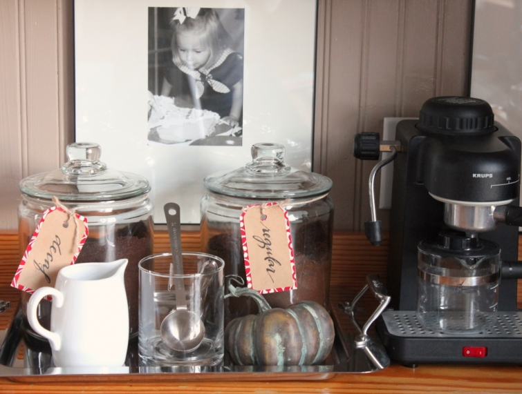
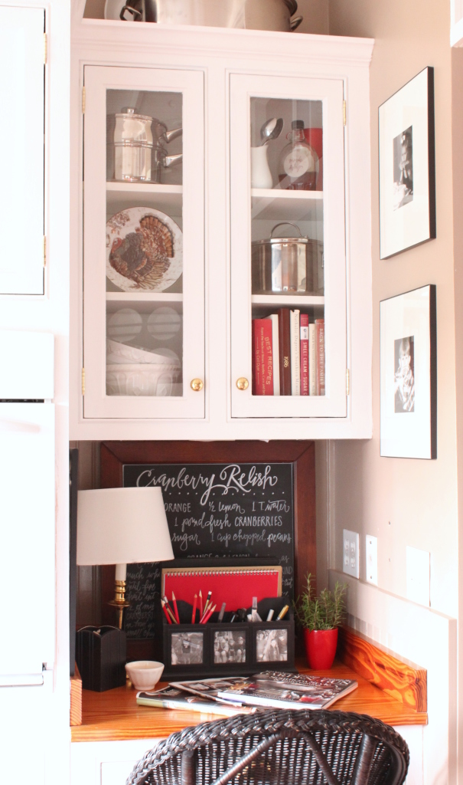

.png)
.PNG)
.PNG)
.PNG)
.PNG)
.PNG)
.JPG)
.JPG)
.PNG)
.PNG)


A couple of weeks ago we were talking about different china patterns to use for Thanksgiving, and I mentioned that I liked a pattern at Williams Sonoma with a turkey in the middle of it. Do you remember that I went to order it,and it was sold out online?

The weekend after that discussion, my daughter had a concert in Atlanta so we made good use of the time there by doing some shopping. We left early that morning so that we could go to the outlets north of the city.

I looked in the Williams Sonoma outlet thinking I might find some of those turkey plates there. No luck. The only thing remotely resembling Thanksgiving was a pattern with pumpkins on it. Plenty of pumpkins – zero turkeys. 🙁

So we drove on into the city and stopped at two different malls where I quickly ran through 2 Williams Sonoma stores looking for those turkey plates. They were sold out at both of them as well. It looked like finding my turkeys was not going to happen.
We dropped our daughter off at the place where she was to perform,and then my husband and I went to eat at a little Mexican restaurant before the concert. While I was munching on my taco, my husband’s cell phone rang. It was our niece who lives in Augusta.
Our conversation went something like this…
Aunt Kelly, I found some of those turkey salad plates you wanted at the Williams Sonoma store here. I can send them to you by my mother if you would like. Do you want them?
Did I want them??
Oh my yes!
So our sweet niece got them for me. Her mother carried them home from Augusta, and those plates made their way to our dining room table. 🙂
They were actually the inspiration for my brown and red Thanksgiving decorating.
And the inspiration for the centerpiece came from the grocery store. Truly. When I was in the produce section there was a small pot of herbs labeled “turkey herbs.” 🙂 You can use the sage, rosemary, and thyme while cooking your turkey. Pretty smart, right? So turkey herbs seemed like the perfect Thanksgiving centerpiece, and I used a sprig of rosemary with each napkin as well.
And I added a little rosemary to the cabinet in the dining room.
Okay, that’s enough about herbs. Let me finish my turkey plate story.
It gets even better. 🙂
The other night my mother in law called and asked my husband if he thought I would like to use my Christmas present from her before the holidays. He told her that would be a great idea; so on Sunday night I got to open my first Christmas gift of the year…
The serving bowl that matches the hard-to-find turkey plates
and the beautiful matching platter that now stands proudly atop the refrigerator.
So for a girl who had no Thanksgiving dinnerware just a couple of weeks ago, I am now blessed with quite a collection thanks to some thoughtful family members!
And while we are talking about Thanksgiving, please don’t forget about the Thanksgiving giveaway here for one of you very thoughtful readers who takes time out to read my ramblings. 🙂 I am so thankful for you! You can find all the details about the giveaway here.
Hope you are making good headway with your plans for Thanksgiving!
Until next time…


.PNG)
I can’t tell you how much I am enjoying your blog since finding it yesterday, I love your turkey plates. I just remembered that I have two similar ones in a box in the garage I will have to look for. My few Thanksgiving decorations get stored in between the Halloween ones. it is another gray rainy morning in Fl, but I am dying to drag my husband over to Winter Park to the WS store just to browse, though I do have a long list of spices I need from the Penzy’s store just down the block from there. Hope you have a wonderful Sunday!
Though it sounds like you’d like the whole set, the pattern is so bold it is perfectly set off how you have it nested in the red. Couldn’t be better if you had it all.
So happy for you Kelly! Those turkey plates are so fun! I am still on the look out for my fall/thanksgiving plates.
Love your simple no fuss table decorating. Not too much to get in the way.
Dear Kelly, I love to read your blog and see your amazing creativity. It was such a bright spot today. I don’t want this to sound like a sob story, but I am having chemo treatments right now. I am an American who has lived in Canada for over 30 years, but I AM STILL AN AMERICAN. We used to celebrate American TG with all the Americans we could gather together. This year it won’t happen, but I love thinking of all the Thanksgivings in the past. It is such a special time. So I’ll continue to enjoy your festivities as I feel blah but greatly loved and cared for. Thank you!
I have so enjoyed reading your blog. I love how you stay true to your style. You take a theme and work it through the house. LOVE it. Your plates are beautiful. I had never realized the importance of the salad plate…I have 2 sets of white…imagine the different salad plates I could use. Thank you!
Oh, you lucky girl; everything is going to be perfect for your Thanksgiving 🙂 Soooo envious of that platter and serving bowl! Also adore the turkey on your entryway table…
(I originally left this comment under the wrong post, lol!)
Your table setting made me want to sit right down and admire your new turkey plate collection!
I’m so pleased you got the plates you wanted – and even better you got a story and happy family memories to go with them!
And I love your Turkey herbs as centrepiece idea.
I’ve decided to model the meal I’m hosting on 30th November on US Thanksgiving, which is technically inaccurate for many reasons (not least my location and nationality) but I’m really enjoying ‘joining in’ with the festivities!!
They are either very sweet family members who know what you like, or they are setting you up to host the Thanksgiving dinner from here until Jesus comes back!
(beautiful).
Oh, what a wonderful family you have! Love those turkey plates…I can see why you wanted them. Your table looks lovely!;)
Ahhhhh….celebrating with you Kelly on getting the WS plates!! The Lord’s timing is always perfect…..you will really appreciate them now and not question that they were the set you wanted. I absolutely love the cotton in your centerpiece and I am coveting the ceramic turkey gravy bowl. Everything looks so inviting and ready for family fun!! Happy Thanksgiving Kelly…….I am thankful for your blog all year long!!
Love your turkey plates with the red! What a wonderful family you have to help you shop for your dishes and what great Christmas gifts!
Thank you for sharing your home with all of us. Have a great Thanksgiving holiday!
Take care.
Hurray for finding the turkey plates! They look absolutely perfect in your dining room! And the turkey herbs! Oh my goodness! I want to find a pot of those at my grocery store!!!
Kelly,
I am loving your family rich stories here lately! What a sweet family you guys have. Those plates are perfect for you! I love the brown with all of your red. It seems like those plates and serving pieces were made just for you! Thanks for sharing all of your wonderful home pictures. I spied that Garden and Gun magazine you referenced earlier. I have to confess that your post on the duck camp in that magazine forced me to buy that issue of the magazine and I left one of the post cards to order a subscription to it out for my husband just in case he wants to order it for me for Christmas. 🙂
So worth all of the trouble – they look amazing on your table and love your dining room!
The turkey plates are stunning and will make a beautiful addition to your holiday table & I’m so happy they found their way to your home! I couldn’t help but notice the cranberry relish recipe on your chalkboard… would you mind sharing? I’m looking for a recipe to make for Thanksgiving!
I so enjoy your ramblings….Happy Thanksgiving!
Jeanne
Very tastefully done (once again)! Happy Thanksgiving to all!
Love this “Happy Ever After” story and love your turkey china! Let the cooking begin!
The Turkey Plates are perfect for you! So happy they found their way to your beautiful table. You are an inspiration and I appreciate you so generously sharing your home and ideas with us! Love your chalkboard creations! Is there a secret to getting such a fine chalk line when writing? Special chalk?
Any suggestion you might have would be appreciated. Thanks!
Lovely table and you will always have a story to tell how it came together.
I like the idea of Salad plates t extend the holiday life of basic China. Lots less storage space needed.
It is so wonderful to have family to fill in the gaps.
Love love the turkey china! I bet you will find more before the season us over!
Kelly, I love everything about this post!! The turkey herbs are a great idea…I’m going to look for those. And your turkey plates are so pretty. I’m happy that you got them, along with the other pieces. What a great family!
Thanks for so much inspiration at Thanksgiving, and all year! ~Ann
I knew it would be beautiful! And what a nice story about family!
Kelly,
Those are beautiful plates and that turkey is quite a handsome fella. Great story, I’m so happy for you. What a sweet family!
Have a wonderful Thanksgiving. I’m thankful for your blog and friendship.
xo,
Karen
Beautiful table setting…can I come? How thoughtful to have family members be on the look out for ya, my girls are the same way.
Now I want Thanksgiving dishes! So elegant – I love the brown and red theme!
What a lovely post and what a loving family. Those turkey plates are really special and I hope the family especially enjoys gathering for Thanksgiving. I have really liked all your recent posts, including the wedding where the decorating and special touches were inspiring.
What a fun story! Thank goodness for family!
Your beautiful table settings makes me wish I was entertaining this year…but after 40+ years of hosting Thanksgiving for the family, I am taking a break. And I’m not sure whether to laugh or cry…but I think I’ll click my heels and laugh. Until Thursday morning when I realize that I only need to fix a side dish or two to take to my brother’s home instead of stuffing and popping a turkey in the oven and feel a little sad about it. Anyhow…it is time for others to take on the job I guess. And in the meantime, I’ll enjoy looking at your beautiful decorations and feeling nostalgic… Thank you!
It all came together perfectly Kelly. The plates look great with the red plates. You are all set for years of Thanksgiving memories.
Love the turkey plates. Your house looks so warm and festive. Happy Thanksgiving.
You know what I love about this story? I love that so many people were thinking about you. Now THAT is a blessing and something to be thankful for. Happy Thanksgiving!
Love love love the turkey plates!! I’m so glad your sweet family members were able to help you find them!! I totally understand your obsession! A few months ago, I was obsessed with a set of Johnson Bros turkey plates I saw in a cute antique shop. Of course when I decided to go back for them, they were gone!! Luckily I was able to track them down on eBay! (But unfortunately at a higher price!:( ….Hope y’all have a happy Thanksgiving!!
I absolutely love your holiday decor and would be totally comfortable with you doing mine! When may I expect you? Lol! Thanks so much for sharing your home! Truly inspiring!
Your decorating all looks so pretty! I love the “nutty” idea, and of course, all your signature jars. The turkey plates are probably the nicest ones I have seen. I don’t do turkey at my house, so I have never bought any. I do like the idea of red and brown — it is very warm and fall-ish.
Kelly: You certainly have the most wonderful family who must love you tremendously! Can I be adopted into very family?:-) The plates are so appropriate for the season and I love the herbs in the centerpiece. Your home must smell amazing! Have a very blessed Thanksgiving!!!!
Isn’t it wonderful when your wishes come true? And isn’t it interesting that it happened when you’d pretty much given up on it? So funny how that happens. What thoughtful relatives you have who know you so well. Your table, et al, looks wonderful. I think I love the platter most of all. We have the real live turkeys wandering around up here. And yes, I’m talking about the bird kind, not the human kind ;-).
I am loving your dinner ware. I’m on the lookout myself.
What a wonderful surprise!! And your table looks beautiful!
Loved the turkey hunt story!! I’ve been looking for the potted herbs,too! Having 14 for Thanksgiving dinner so now I’m off “tracking my turkey”! Got to shake my tail feathers!! 🙂 Have a blessed holiday! Do you have the week off? Hope so!
This is magical! I’m going to start blogging today about things I want and see if my family comes through for me on a similar scale. Like “Dear Family and Blog Readers: I have been DYING for a fabulous drop-top BMW coupe, flexible on color, but it NEVER seems to appear in my drive…”
But seriously, that’s a thoughtful bunch of folks you have looking out for you!
I adore the turkey plates! The Thanksgiving table is beautiful! Your blog is always a great inspiration to me. It encourages us all to look around and use the simple things that we find either outdoors or around our homes to create our own holiday memories! Thank you for sharing all your ideas with us! Happy Thanksgiving!
Kelly, I just love the way this story came about! What a great family you must have that they would go out of their way to bless you! These plates are great. Your table looks so beautiful. There are some different colors on the plates so next year if you wanted to you could change it up with maybe green or a dark brown instead of the red. You will love these for a long time.
Great story and beautiful table ideas. I love your napkins rolled with the rosemary! Thank you for the inspiration and chance for the giveaway.
Your Thanksgiving table is lovely.The turkey herbs inspired me to use my beautiful rosemary plant in my tablescape. I read that smelling this herb helps with memory. Congratulations receiving your lovely turkey plates and special pieces from your family members. I am sure they have received much love from you.
I LOVE your turkey plates and the brown/red touches. When you did the post on Thanksgiving china and table settings earlier, I fell in love with the Johnson Brothers Friendly Village pattern, and I think want to get started collecting that set. In fact, it may be part of my Christmas gift this year! It’s so vintage-y.
So glad you were able to get the lovely Williams Sonoma plates! What a delightful surprise and blessing!
Kelly, Love your posts and everything about your home. Have a wonderful Thanksgiving and thank you so much for the giveaway.
Love your Thanksgiving table. It all came together so sweet! Really, how much more wonderful could it have happened?
Kelly,
I LOVE to open Christmas gifts early! And just between you and me, when I was little, (money was REALLY tight for my parents) I would sneak around the house looking for presents. One year I found a box of gifts my Mother had tucked away in a back hallway for us kids. It was filled with wonderful things-jump ropes, coloring books and crayons all sorts of goodies. Christmas morning came and we opened all our gifts. I snuggled up with my Mom for a hug and a kiss and I remember she asked if I got everything I wished for…I had no choice but to confess and ask why we didn’t get the jump ropes and coloring books that I spied in the hallway…She had forgotten about the box!!!
Anyway, what wonderful family you have to search out the beautiful Turkey dinnerware! You deserve to be blessed.
Happy Thanksgiving!
Your turkey plates are marvelous, but quite frankly, you could make paper plates look like the bombdiggity! I love studying every detail of your wonderful home. What a great give-away-too! You make the holiday spirit very catchy!!Lori Lucas
I love the story behind your new dishes!
Everything looks so beautiful! I’m so happy you have your turkey dishes. William Sonoma has such classy items. Have a blessed Thanksgiving.
Like a good movie, I was predicting the ending BUT I am so gullible I am never really sure it will turn out as I want until the ending. I am so glad you got the turkey dishes! (We all know what this is like, don’t we, Josie! Not buying, then wishing we had!) I love the rosemary on the napkins. (I just got “into” rosemary…thank you, DiAnne.) I love your brown and red and that your mother-in-law went ahead and gave you your Christmas present! I bet she couldn’t wait to surprise you! And, your sweet niece who really got the ball rolling. So thankful for family and friends! Happy Thanksgiving!
How great this WS pattern looks in your home and how very thoughtful your family is. Hope your Thanksgiving is wonderful.
Thoughtful family members indeed! I love that it all came together for your Thanksgicing table. It looks wonderful! Those beautiful turkeys add lots of color and I love your centerpiece too. Happy Thanksgiving Kelly!
You are very blessed to have such wonderful family members thinking of you, knowing how much you love those gorgeous plates!…they are magnificent and it is no wonder that WS sold out of them so quickly!….you always have the most beautiful holiday vignettes!…
I love when a plan comes together! How thoughtful of everyone to look out after you. Everything looks beautiful, just love the red and brown. Enjoy your turkey dishes and the great story that goes with them.
It was meant to be! Everything just fell into place at the perfect moment! I hope you enjoy these Turkey plates for many years.
Went into a WS store in Ala. over the weekend and they had the salad plates on their display table right at the front door. Who did I immediately think of??? You have some great family members! BTW…… Love the red and brown!
This reminds me of myself!!!!! So many times I have driven everywhere looking for something and making special trips to Nashville and surrounding areas hoping against Hope I’ll find what I’m looking for. Sometimes I’m lucky and sometimes not! Love your turkey dishes! And the colors!
So happy for you that you got your turkey dishes. What a great family to think of you when they found some pieces of that set. I love that pattern. I know that you will enjoy it for years to come. Have a wonderful Thanksgiving.
You are such an inspiration! Love the turkey plates, the turkey herbs and RED! Thank you for sharing! Can’t stop thinking about pumpkin bread…..
Kelly, your posts about your house and your decorating ideas are some of my very favorites. Those plates were made for your house and your red dishes!
Ok, now I want the Turkey plates too! I was in Sonoma last week and looked again at the pumpkin plates but didn’t do it either. I love your choice. Everything came together so well and look how your extended family members were right there and so “giving” of there thoughtfulness and effort! Between the special delivery and early Christmas gift, wow! Mother in law gets the gold star for the platter and bowl. Gorgeous! You lucky girl! Well, so in my hunt, I did find some white background with green/brown oak leafs and a brown Mr. Tom design. Yes, I too wanted to give Mr. Turkey his due. I bought coffee mugs and bowls, but no salad plates, darn. That’s all they had. These were found at my Home Goods. I guess my colors will be the brown and green. I have the traditional white turkey embossed platter and big white ceramic Turkey for the centerpiece. Time to get creative…. I have to say I have always thought that Thanksgiving comes and goes so quickly and poor Mr. Turkey and the Pilgrims get short changed. So much excitement and anticipation with Christmas, but I feel as strongly about this holiday, as it is the “start” of the season of “gathering and giving” and the importance of family. Oh, and we mustn’t forget all the good food! Well, once again you have stirred my inner “Martha”. Look how you kept to your simplistic styling by using such a pretty design. Ugh, and you even got to showcase your beloved red. I love it all Kelly. Good job! Have yourself a wonderful Thanksgiving.
Love the turkey plates and your tablescape. I got the Spode turkey plates as a gift from my mom a few years ago. I like them so much they hang on my kitchens backsplash.thanks for the inspiration. I may take them down and use them for Thanksbiving.
Kelly, so happy for you that you got your WS turkey plates…and the bowl and platter are such a bonus! Love brown and red together…a nice change from traditional orange/rust. Have a wonderful Thanksgiving!